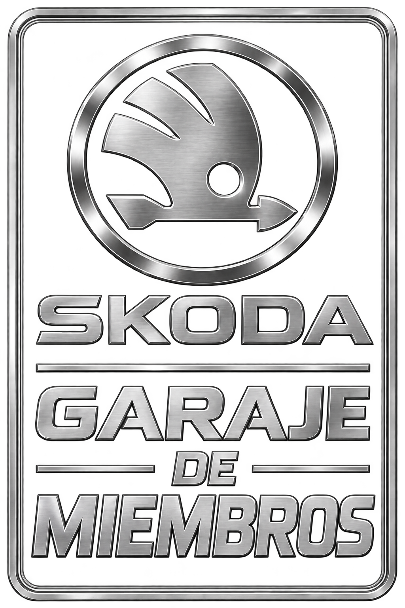

4.ª edición Calçotada VRS
Nos vemos en la próxima quedada del CLUB OCTAVIA VRS CATALUÑA para compartir nuestra pasión por los coches.
- Lugar
- Embolic by moon
- Hora
- 13:00h a 17:00h
CLUB OCTAVIA VRS CATALUÑA
El punto de encuentro para quienes vivimos
la pasión por el Octavia VRS en Cataluña.
01 / EL CLUB
Bienvenidos al club, rodamos juntos, disfrutamos en familia.
CLUB OCTAVIA VRS CATALUÑA nace como un lugar de encuentro para aficionados a Škoda y al Octavia VRS. Un espacio para compartir nuestros coches, intercambiar experiencias y disfrutar juntos de la afición.
Información · Reglas en carretera02 / GARAJE
Los coches que nos reúnen.
Un espacio para compartir cada Octavia.

03 / FOTOS DEL CLUB
Recuerdos y detalles de nuestra pasión.
Entra en la galería para ver los álbumes de eventos.
 01 / CONTACTO CON EL ASFALTO
01 / CONTACTO CON EL ASFALTO 02 / ADN VRS
02 / ADN VRS 03 / NOMBRE PROPIO
03 / NOMBRE PROPIO 04 / DEPORTIVIDAD HASTA EL FINAL
04 / DEPORTIVIDAD HASTA EL FINAL04 / AGENDA DEL CLUB
Las próximas fechas para volver a encontrarnos.
Elige un mes o pulsa una fecha marcada.
| L | M | X | J | V | S | D |
|---|---|---|---|---|---|---|
| 1 | 2 | 3 | ||||
| 4 | 5 | 6 | 7 | 8 | 9 | 10 |
| 11 | 12 | 13 | 14 | 15 | 16 | 17 |
| 18 | 19 | 20 | 21 | 22 | 23 | 24 |
| 25 | 26 | 27 | 28 | 29 | 30 | 31 |
1 quedada anunciada en enero de 2027.
Nos vemos en la próxima quedada del CLUB OCTAVIA VRS CATALUÑA para compartir nuestra pasión por los coches.
05 / MERCADILLO
El mercadillo del club: piezas, recambios y accesorios que los miembros tienen a la venta. Entra para consultar los anuncios y contactar con cada vendedor.
Entrar al mercadillo06 / CIRCUITO DEL CLUB
Ponte al volante desde el interior y completa tres vueltas al circuito. Acelera, frena y busca tu mejor vuelta.
Jugar al simulador ↗06 / COMUNIDAD
Nuestra pasión también se comparte en Instagram.
Conoce el perfil del club y escríbenos para saber más sobre la comunidad.
CONTACTO DE PRUEBA
albertouceda77@gmail.comPuedes escribir a este correo durante las pruebas de la web.
El acceso privado de socios llegará en una siguiente fase. Mientras tanto, puedes contactar con el club a través de Instagram.